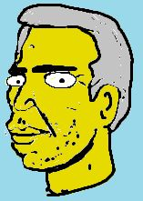

About Me :D
Hi, my name is Alaric, also known as OrkOrk. I'm an illustrator and animator from australia
I also work with graffiti art and urban art
I'm most commonly found on Newgrounds, but you can also find me on other places like Twitter, Instagram and etc.
I'm always looking for paid work, if you're interested, head to the comissions page and check my prices and work examples
The site is rather barebones right now, but I'm slowly updating things as I work on new projects, so expect this and other sections to be updated and/or reworked in the near future
This site was built from the ground up by June S. Sai, 2022-2023

The Man Himself, OrkOrk
(Circa 2016, Colorized)